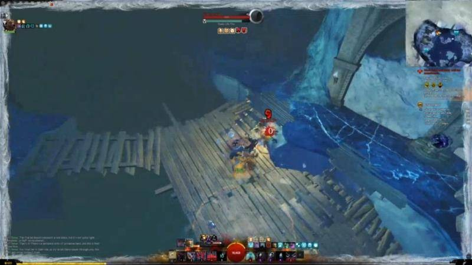
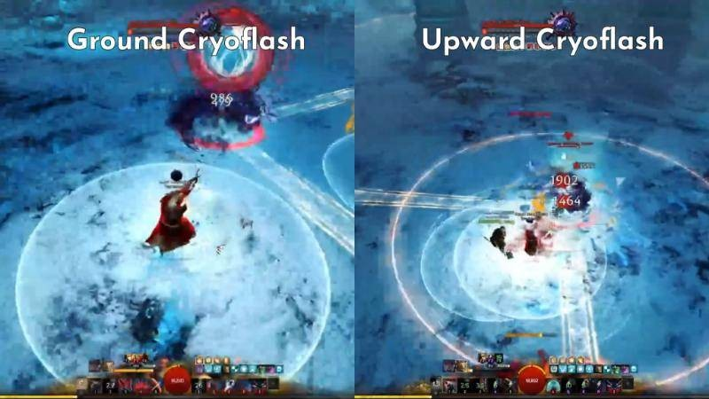

Cryoflash: sofortiger Tod – auch mit Rigorous Certainty
Pfeil nach oben (Lofted) = rein in den Kreis und hochspringen. Rotes Kreuz (Terrestrial) = raus, komplett meiden. Die Kreise spawnen immer an derselben Stelle → an der Boss-Animation erkennen und vorlaufen.
2
Frost Wisps (neu)
Kommen sie zu nah, stehlen sie Life-Fire. Sofort CCen, um die Buffs zurückzuholen, bevor sie weglaufen. Ohne Life-Fire stackt Deathly Rime (Schaden + Slow).
3
Hailstorm: verteilen
Jeder Spieler bekommt eine AoE. Nicht überlappen – jede Überlappung macht mehr Schaden.
4
Green ab 80 %
Wintry Orb landet auf einem zufälligen Spieler → alle stacken im Green, sonst schwerer AoE-Schaden.
5
Focused Spikes alle 0,5 s
Viel mehr Druck als im NM: kiten oder Stabilität bereithalten.
6
Sicht ist eingeschränkt – eng zusammen bleiben
Gefährlichste Trash-Stelle: Svanir-Gruppen + Wisps gleichzeitig. Wisps haben Vorrang, sonst fehlt euch beim Boss das Life-Fire.

② Frost Wisp nähert sich der Gruppe

① Links Kreuz = raus · rechts Pfeil = rein & springen
Details zum Nachschlagen
Start & Grundmechaniken
CM aktivieren: alle NM-Erfolge nötig, Challenge Mote vor dem ersten Tor anklicken.
Ihr startet als Kodan-Bär – über das Fraktal-Interface könnt ihr wieder normal aussehen.
Sicht stark eingeschränkt → als Gruppe eng koordinieren.
Alle starten mit Life-Fire, das gegen Deathly Rime schützt (stackender Debuff: Dauerschaden + Slow).
Frost Wisps & Svanir-Gruppen
Frost Wisp – sofort CCen
Neu im CM: Frost Wisps stehlen das Life-Fire der Gruppe, wenn sie zu nah kommen.
Schnell CCen, um die gestohlenen Buffs zurückzuholen, bevor die Wisps abhauen.
Svanir-Gruppen (Fern- und Nahkampf gemischt) bleiben wie im NM – zusammen mit Wisps wird es aber schnell chaotisch.
Whispering Shadow (Endboss)
Ground (links) vs. Upward Cryoflash (rechts)
Cryoflash tötet im CM sofort, auch mit Rigorous Certainty.
Lofted (nach oben): orange Kreise mit roten Pfeilen nach oben → rein und hochspringen.
Terrestrial (Boden): orange Kreise mit roten Kreuzen → komplett meiden.
Kreise kommen immer an derselben Stelle → anhand der Boss-Animation vorher hinlaufen.
Hailstorm: AoE auf jedem Spieler – verteilen, jede Überlappung erhöht den Schaden.
Wintry Orb (Green) ab 80 %: Green auf zufälligem Spieler, alle stacken drauf.
Focused Spikes: spawnen alle 0,5 s – kiten oder Stabilität.
Erfolge (CM)
Undying Light: CM ohne Tod im Team, volle 5er-Gruppe von Anfang bis Ende.
Shatterstep: Boss besiegen, ohne von Cryoflash getroffen zu werden.
Unceasing Whispers: Kinfall CM 7× abschließen.
Klassen & Rollen
Daten: GW2 Wingman, Challenge Mode, „Balance Patch November 2026“, Stand 21.11.2026 · Whispering Shadow: Erfolgsquote 87,2 %, Median-Kill 1:29 min
Am häufigsten gespielt (CM)
Spec
Anteil
Scrapper
12,0 %
Amalgam
11,5 %
Troubadour
10,8 %
Harbinger
8,4 %
Mechanist
7,8 %
Chronomancer
4,1 %
Firebrand
3,6 %
Specter
3,5 %
Dragonhunter
3,4 %
Ritualist
3,1 %
Höchster Ø-DPS (CM)
Spec
Ø DPS
Top
Scrapper
44.952
59.645
Bladesworn
44.114
59.743
Conduit
40.567
46.219
Antiquary
39.689
50.938
Harbinger
39.668
56.764
Holosmith
39.135
53.301
Catalyst
37.900
46.875
Amalgam
37.880
63.211
Weaver
37.766
53.511
Willbender
37.442
49.669
Rollen-Empfehlung (abgeleitet aus Beliebtheit + Ø-DPS)
Rolle
Specs
Warum
DPS sicher & beliebt
Scrapper, Amalgam, Harbinger, Mechanist
Am häufigsten in erfolgreichen CM-Logs – bewährt für diese Mechaniken.
Große Spanne zwischen Ø und Top-DPS → als Support und als (Boon-)DPS gespielt.
Heal-Support
Troubadour
Ø-DPS unter 3,5k → in CM-Logs praktisch nur als Heiler/Support.
Komp-Tipp: Kinfall ist der kürzeste CM (Median unter 1:30). Viel CC für die Wisps und mindestens eine gute Stabi-Quelle für die Spikes einplanen.
Klassentipps – worauf du achten musst
Mechanik-Bezug aus dem Hardstuck-Guide; die Klassenhinweise sind allgemeine Spieltipps. Für die neuesten Elite-Specs (z. B. Troubadour, Ritualist, Paragon, Luminary, Conduit, Evoker, Antiquary, Galeshot, Amalgam) gelten v. a. die Klassen-Grundregeln – prüfe die konkreten Skills im aktuellen Build.
Wächter
Firebrand · Luminary · Willbender · Dragonhunter
Stabilität für die Spikes: z. B. „Stand Your Ground!“ – mit der Gruppe absprechen.
Dragonhunter: Fallen und Spear of Justice als CC gegen Wisps.
Willbender: Dashes nicht in Terrestrial-Kreise.
Ingenieur
Mechanist · Amalgam · Scrapper · Holosmith
Scrapper ist hier der meistgespielte Spec (12 %).
Hammer- und Gyro-CC schnell auf Wisps legen.
Mechanist: Mech hält Uptime, während du Cryoflash-Kreise läufst.
Mesmer
Virtuoso · Chronomancer · Troubadour · Mirage
Viel Burst-CC (Signets, Mantras) – ideal gegen Wisps.
Blink/Portal hilft, rechtzeitig in Lofted-Kreise zu kommen.
Troubadour: Heiler Nr. 1 in diesem CM.
Elementarmagier
Tempest · Weaver · Catalyst · Evoker
Lange Channels nicht kurz vor Cryoflash starten.
Lightning Flash zum schnellen Umpositionieren.
Wenig HP → Hailstorm-Überlappung unbedingt vermeiden.
Nekromant
Ritualist · Scourge · Reaper · Harbinger
Harbinger: sehr beliebt (8 %), hoher Ø-DPS.
Blight senkt Max-HP – mit Hailstorm-Schaden vorsichtig sein.
Fear/Pull-Skills als CC gegen Wisps.
Widergänger
Renegade · Vindicator · Herald · Conduit
Vindicator: Ausweichen ist ein Sprung – praktisch für Lofted-Kreise.
Staff 5 / Hammer-CC gegen Wisps.
Conduit: hoher Ø-DPS in den Logs.
Krieger
Berserker · Spellbreaker · Bladesworn · Paragon
Bladesworn: Top-2 Ø-DPS – Dragon Trigger aber nicht vor Cryoflash laden.
Hammer/Mace bringen viel CC für Wisps.
Balanced Stance gibt dir eigene Stabilität.
Waldläufer
Soulbeast · Untamed · Galeshot · Druid
Soulbeast/Galeshot solide DPS-Optionen.
Longbow 4 (Knockback) als Wisp-CC.
Dolyak Stance = Gruppen-Stabi gegen Spikes.
Dieb
Daredevil · Deadeye · Specter · Antiquary
Daredevil: 3 Ausweichbalken, sicher gegen Spikes.
Basilisk Venom / Bandit's Defense als CC.
Deadeye: Kneel macht stationär – vor Cryoflash aufstehen.